※このページは、大阪公立大学 柴原研究室のホームページの内容を引き継いだものです。
柴原研究室では、各種強度評価を行う設備の他に、大学では珍しい溶接ロボットを3台も保有しており、日本でも有数の船舶製造研究・船舶接合研究設備が整っております。また近年、この実験室から多くの特許技術が生まれています。溶接ロボット – FD-V25(2台)、Almega AⅡ-V6(1台)
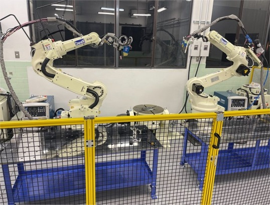
柴原研究室には3台の溶接ロボットがあります。その特徴は、以下の通りです。
・ 複数台同時に溶接することができる。
・ 電極と板との距離(アークハイト)を保ちながら溶接することができる
・ 板どうしの境界(開先部)をセンシングしながら狙い撃ちすることができる
これらの溶接ロボットを用いることで、各種構造物の溶接組立を行う事ができます。また、複数の溶接ロボットを制御して連携させることにより、船舶・海洋構造物・橋梁・建築・自動車等のあらゆる分野の構造物製造時の溶接変形を再現することができ、各種生産現場における生産性の向上に繋げる取り組みを実施しています。
開先認識センサー – FD-QT
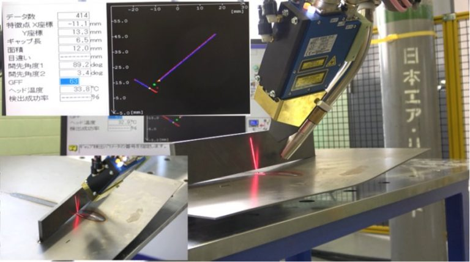
レーザによる高精度な溶接線自動認識センサー。溶接時には、板の変形や設置誤差などにより、溶接トーチが溶接線を必ずしも正確に捉えることができない場合があります。そのような場合にも、レーザを用いることで、溶接したい箇所を正確に狙えるようにするのがこの開先認識センサーです。このセンサーを用いることで、実験時に、失敗の少ない良質な溶接ビードの形成を可能としています。
TIGアークセンサ – FD-TR
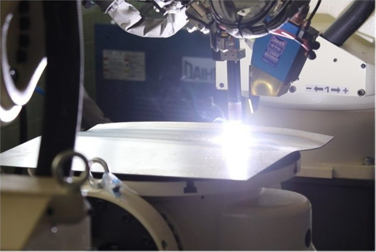
溶接時には、電極－板間の距離の大きさに応じて電圧は変化し、それが原因で溶接不良に繋がる場合もあり問題となっていますが、その電圧差を逆に利用することにより、電極－板間の距離を認識し、一定距離を保つ制御をしているのがこの「開先認識センサー」です。このセンサーを用いることで、良質な溶接ビードの形成を可能にしています。
■三次元画像計測装置 – 3D Shape & Deformation Measurement Device Using Image Correlation Technology
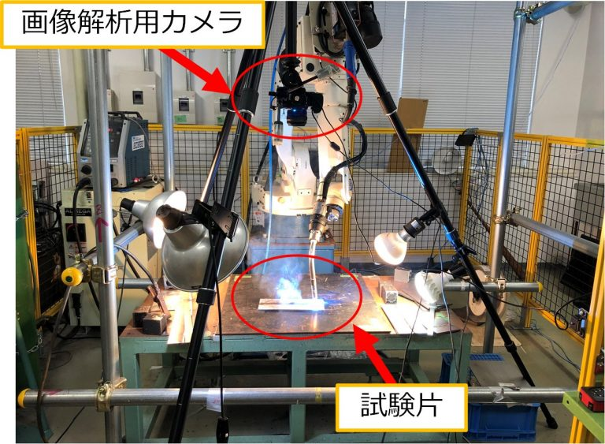
デジタルカメラによる撮影画像を用いて、三次元の形状測定や変形計測ができる計測システムです。特に、三次元変形計測システムは、柴原研究室で開発されたシステムであり、物体の三次元移動量(並進移動・回転移動)の計測や、溶接最中の変形挙動を正確に計測するために使われています。これを用いることで、溶接変形を直接観察することができるため、メカニズム解明のための大変有用な情報を得ることができます。
サーモグラフィー – InfReC R550Pro
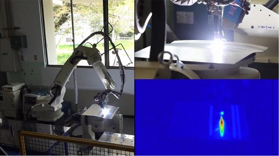
-40℃から2000℃までの温度分布を、高精度かつ高解像度に計測できる装置です。最速120Hzの高速サンプリングや120万画素の高精細な熱画像を取得できるのが特徴です。これにより、溶接時の詳細な温度分布を実測することができるため、製造工程の実験に対し有効活用できます。
温度計測装置 – GLAPHTECH GL7000
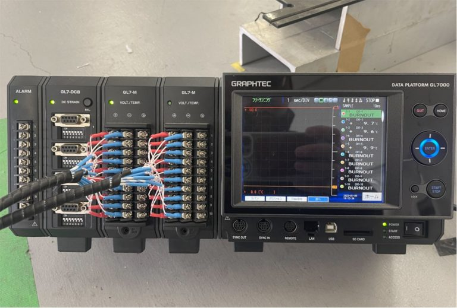 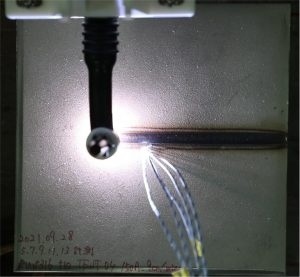
GLAPHTECH GL7000は、熱電対により得られた-270℃から1370℃までの温度や、ひずみ、変位などの物理量の時系列データを取得することができるデータロガーです。デジタルツインを行う際の各種時系列データの取得に用いることができます。画面により温度履歴等の結果を即時に表示することができ、エクセルファイルなどにも簡単にデータ保存することができます。
構造計算機室 – Computer Room for Structure Analysis
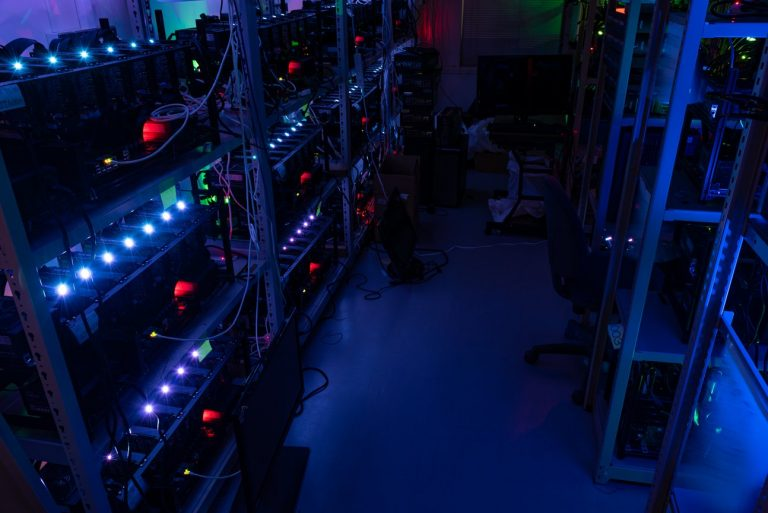
柴原研究室では、世界最速レベルの超高速シミュレーション技術を独自に開発し、基礎研究のみならず、設計・生産の共同研究等に応用しています。その心臓部とも言えるのが、200台を超えるGPUが設置されている、この構造計算機室です。この部屋から新たな解析手法やAI解析システム、制御システム等が産み出されております。
3Dプリンター – Flashforge GUIDER II
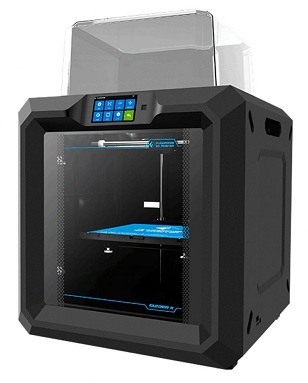
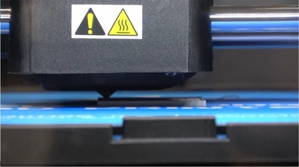
3D CADなどの3次元ソフトウェアで作成された3次元データを元に断面形状を積層し、自由自在に立体造形することができる装置です。280×250×300mmの大きさまで造形することができ、多様な用途に用いることができます。
溶接デジタルツインシステム – Digital Twin System for Welding Phenomena
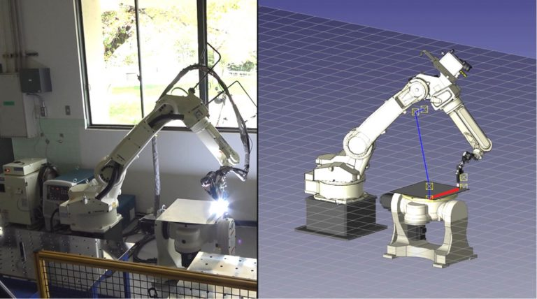
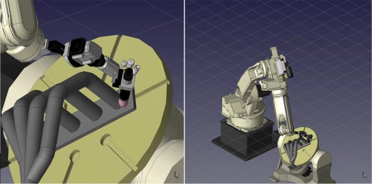
柴原研究室では、船舶建造のみならず、海洋構造物、橋梁、建築、自動車等の各種産業にも適用可能な生産システムの開発を進めています。その中でも重要視しているのが溶接デジタルシステムの開発です。このシステムは、工場における溶接による組立生産と数値計算とを連携させることで、生産性を著しく向上させるものであり、柴原研究室独自に開発されたシステムです。
三次元形状計測装置 – FARO Gage / FARO Arm
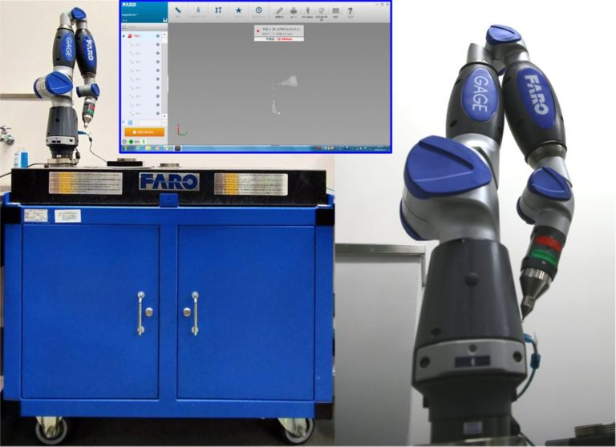
測定対象物体に対しプローブを連続的に押し当てることで、物体の三次元形状を取得することができ、その体積計算、面積計算等を自動的に行ってくれる便利な装置です。各種物体認識のほか、溶接変形シミュレーション結果の妥当性検証などに用いることができます。
レーザ式三次元形状計測装置 – Laser-type 3D Shape Measuring Device
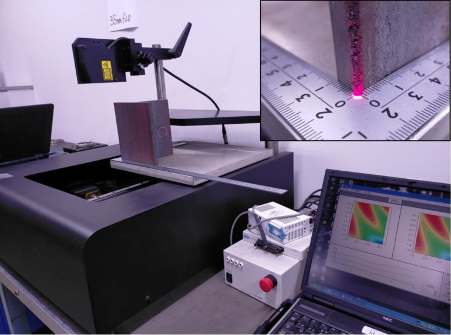
レーザを用いることで、物体の三次元形状を高精度に形状計測することができます。専用の3Dグラフィックソフトを用いて描画することで、設計や製造の研究に役立てています。
卓上オートグラフ（５ｔ） – Desktop-type Auto Graph
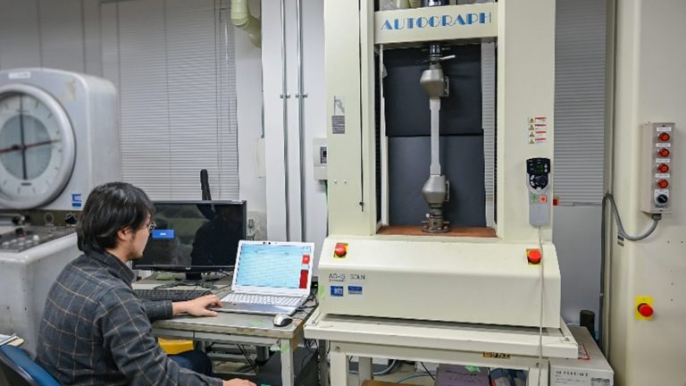
荷重を制御しながら試験材料に力を加え、その時の『加えた力の大きさ』と『変形量』の関係から材料の特性を調べます。材料の特性を知ることで、様々な形状の船舶構造の強度予測に役立てることができます。この装置は卓上でありながら、5トンまでの荷重を負荷し破壊試験を行うことができるため、多くの用途に使用することができます。
卓上型精密引張り試験機 – Desktop-type Precision Tensile Tester
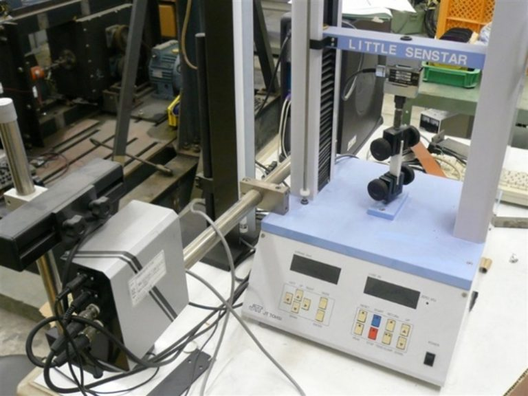
卓上型精密引張り試験機は、小荷重による精密な強度評価を行うための装置です。必要な機能を小型化し集約された材料試験機です。ゴムやプラスチック等の柔軟材料の強度評価に対し威力を発揮します。
万能試験機（３０ｔ） – Universal Testing Machine
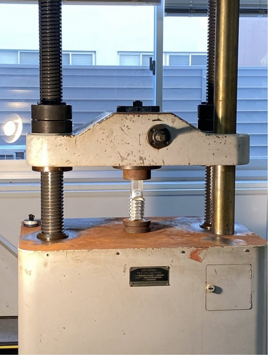
万能試験機では、溶接ロボットを用いて組み立てられた構造体や構造材料に対し、30 tonの引張り、圧縮、曲げ等の荷重を負荷することができます。また、その際に発生するひずみや変位を測定することにより、材料の持つ力学的特性を調べることができます。
オートグラフ（２５ｔ） – Auto Graph
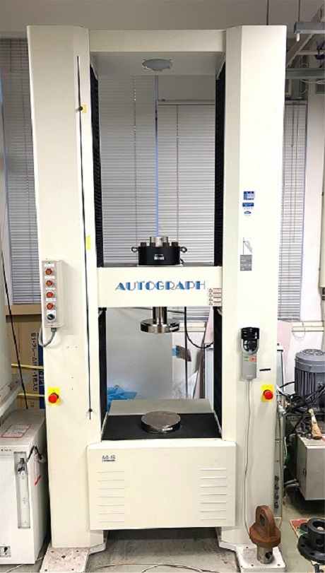
荷重を制御しながら試験材料に力を加え、その時の『加えた力の大きさ』と『変形量』の関係から材料の特性を調べます。材料の特性を知ることで様々な形状の船舶構造の強度予測に役立てることができます。こちらの装置は25トンの大きな荷重を負荷することで、実用構造材料が破壊に至るまでの変形を観察することができ、また、力と変形の関係をデータ化することができます。
※大阪公立大学 柴原研究室HPより